|
|
|
Выставка «50 лет Российскому го»Под таким девизом я устроил большую выставку на EGC-2016 в отеле «Зенит» по указанию Г.И. Нилова. Об этом чемпионате у нас остались самые тёплые воспоминания. По уровню организации он далеко превзошёл первый питерский еврочемпионат 2003 года, прошедший в кампусе СПбГУ в Старом Петергофе. И я был рад, что на этом мероприятии ещё смог присутствовать Георгий Нилов – последний из оставшихся рыцарей нашей прославленной четвёрки, подарившей России го. Необходимость такой выставки следовала из одноимённой статьи Нилова, помещённой на нашем сайте 17 мая 2016 г. Предлагаю свой фоторепортаж о том событии.
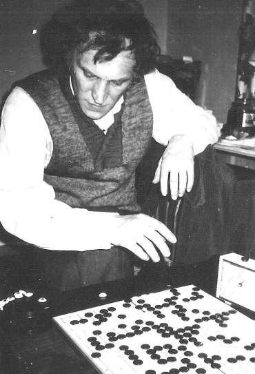 Г. Нилов
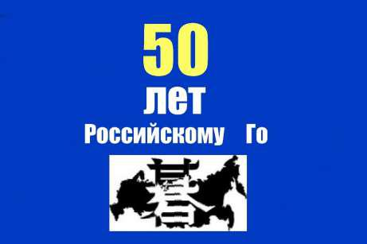
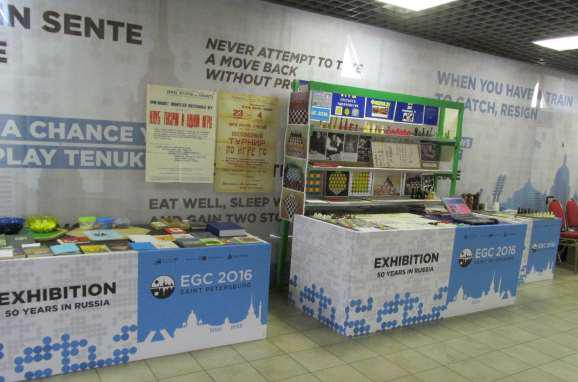 Стенд В. Трубицына на EG C-2016 «50 лет Российскому го». Никогда ранее наши юбилеи не отмечались в таком формате.
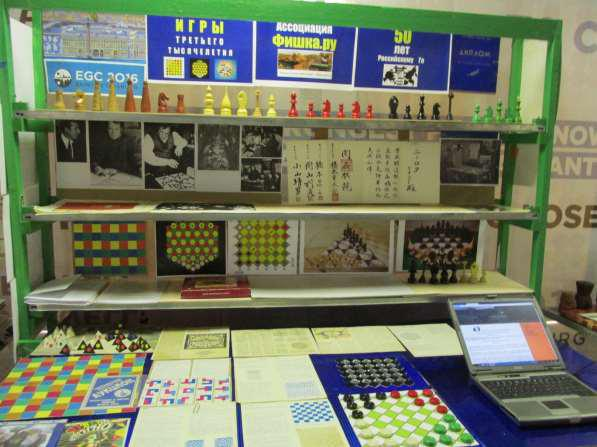 Центральная часть юбилейного стенда.
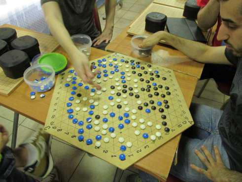 Итальянская команда увлеклась игрой в го для троих игроков.
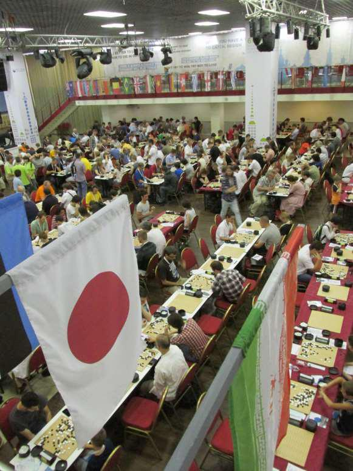 Вид с галереи.
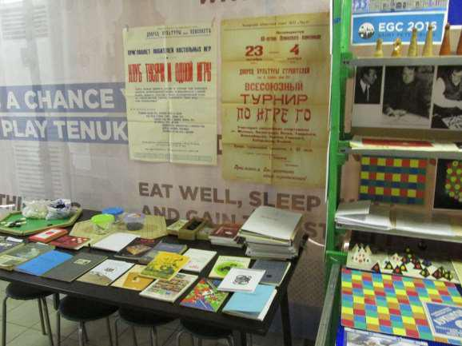 Первые плакаты Ю.П. Филатова, литература о го.
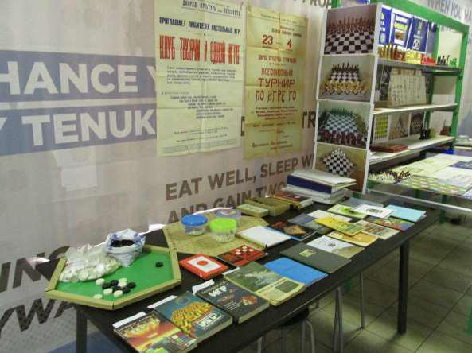 Суго, гексо-го и шахматные игры Александра Ерохно.
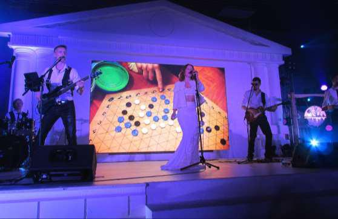 Концерт на фоне Гексо-го В. Трубицына.
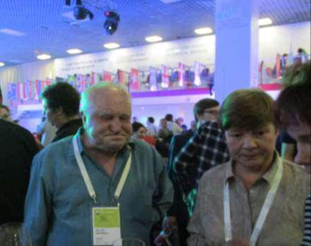 Последний снимок Г. Нилова.
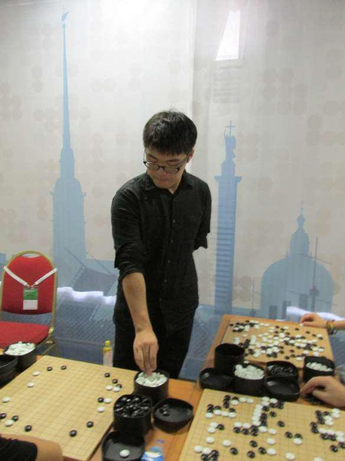 Международные мастера дают сеансы одновременной игры.
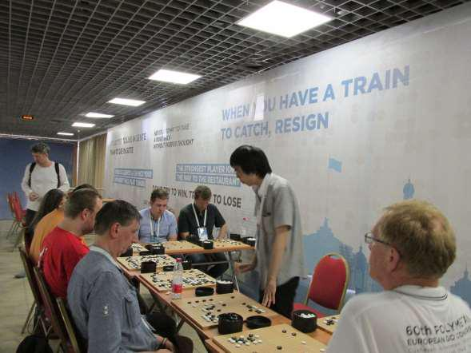
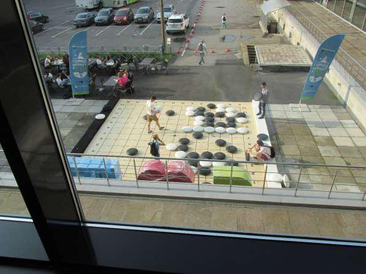 Гигантское го тоже в почёте.
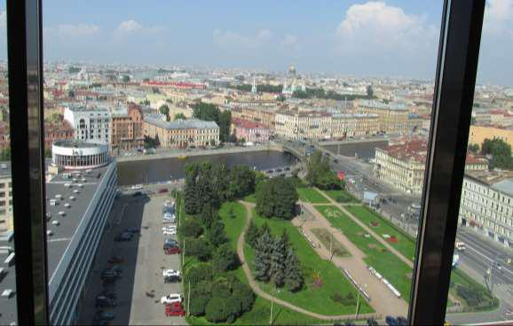 За окном – центр Питера.
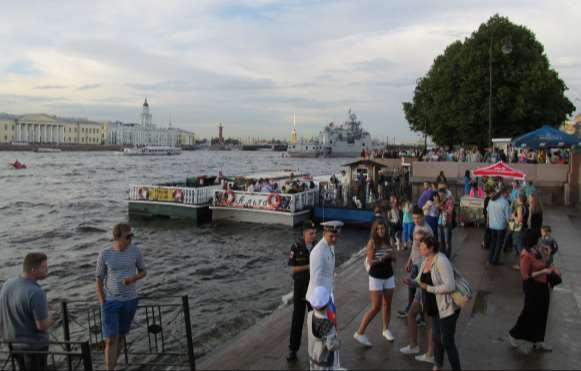 В это же время на Неве шла подготовка к морскому параду.
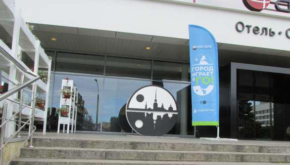
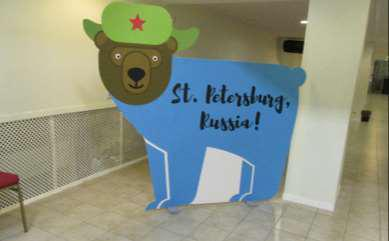
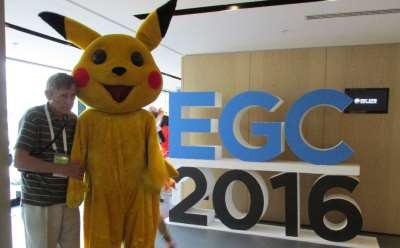
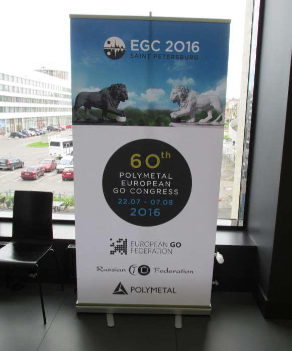
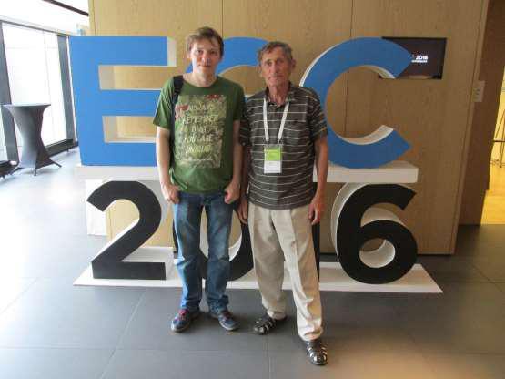 Победитель чемпионата И. Шикшин и В. Трубицын.
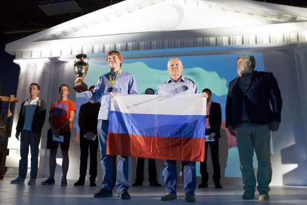
Отец и сын Шикшины на пьедестале почёта. EGC-2016. В. Трубицын Май 2016 г. |
|
|
|